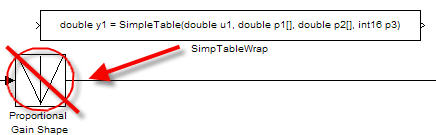
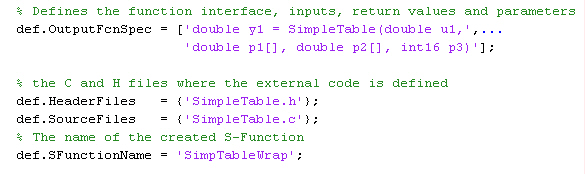
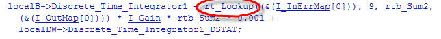
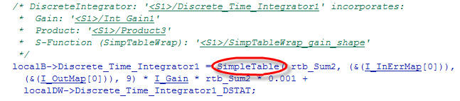

Simulink モデルと生成したコードから外部 C コードの呼び出し
概要:外部関数を呼び出すための方法として Legacy Code Tool を紹介します。Legacy Code Tool を使用すると、シミュレーション内や生成コード内から外部関数を呼び出すことができます。
所要時間: 45 分
目的
理解する内容は次のとおりです。
- Simulink モデル シミュレーションの一部である C 関数の評価方法
- Real-Time Workshop で生成したコードからの C 関数の呼び出し方法
目次
置換プロセス
Simulink® モデルはモデル ベース デザインの一部です。多くのアプリケーションの設計には、試験によって確認ずみの既存の C 関数のセットも含まれています。これらの関数を Simulink モデルと生成コードに容易に統合できることは、Simulink を使用して制御を開発するプロセスにおいて非常に重要です。
このモジュールでは既存の C 関数を呼び出すカスタム Simulink ブロックの作成方法を紹介します。そのブロックがモデルの一部であれば、シミュレーション環境の利点を生かしてシステムのより高度な試験をすることができます。
例として、PI コントローラーの Lookup ブロック (ルックアップ テーブル) は既存の C 関数の呼び出しで置き換えられます。この関数はファイル SimpleTable.c と SimpleTable.h で定義されています。

C 関数を呼び出すブロックの作成
既存の C 関数の呼び出しを指定するには、S-Function ブロックを使用します。Simulink Legacy Code Tool を使用すると、S-Function ブロックの作成プロセスを自動化することができます。このツールを使用して、既存の C 関数とのインターフェイスを指定します。そして、S-Function ブロックの作成を自動化するインターフェイスを使用します。
以下のステップ 1 ～ 6 を完了して、既存の C 関数 SimpleTable.c 用の S-Function ブロックを作成します。Legacy Code Tool の使用方法の詳細は、このモジュールの最後にリンクされています。
1. タスク: 関数インターフェイス定義構造体を作成します。
def=legacy_code('initialize')
データ構造体 def は既存の C コードに対する関数インターフェイスを定義します。
2. タスク: 関数インターフェイス定義構造体を配置します。

legacy_code('sfcn_cmex_generate',def)
legacy_code('compile',def)
5. タスク: S-Function ブロックを作成します。
legacy_code('slblock_generate',def)
S-function の作成は 1 回だけのタスクです。1 回ブロックを作成すれば、どのモデルにも再利用できます。
legacy_code('sfcn_tlc_generate',def)
ステップ 1 ～ 5 で、シミュレーション中の各時間ステップに指定した関数を呼び出す S-function ブロックが作成されました。ステップ 6 では TLC ファイルを作成します。このファイルは Real-Time Workshop® によるブロック用コードの生成方法を指定する S-Function のコンポーネントです。
Simulink 環境での外部コードの確認
既存の C コードを Simulink モデルと統合した場合は、必ず結果を確認してください。
この例では、Lookup ブロックを既存の C 関数で置き換えます。置換を確認するために、Lookup ブロックで生成されたシミュレーション結果を新しい S-Function ブロックで生成された結果と比較します。
- Sine Wave ブロックは範囲が [-2 : 2] の出力値を生成します。2].
- ルックアップ テーブルの入力範囲は [-1 : 1] です。1].
- ルックアップ テーブルからの出力は入力の絶対値です。
- ルックアップ テーブルの出力は、入力の限界値で出力を切り取ります。
次の図に確認結果を示します。既存の C 関数と Simulink テーブル ブロックとで、出力値が同じになっていることに注意してください。

Simulink モデルの一部である C コードの確認
既存の C 関数コードの機能を独立したコンポーネントとして確認した後で、モデルの S-function を確認します。テスト ハーネス モデルを使用して確認作業を完了します。
シミュレーション結果は期待されるゴールデン値と一致しています。

生成コードからの C 関数の呼び出し
Real-Time Workshop は、S-Function ブロックをシステムの他のブロックと同様に処理するために、TLC ファイルを使用します。S-Function ブロックの C コードを呼び出すと、次のようになります。
- データ オブジェクトを使用できます。
- 畳み込み表現、つまり複数の計算を単一の出力計算にまとめる操作が行われます。
2. タスク: 生成コード (PI_Control_Reusable.c) を調べます。
生成コードは C 関数 SimpleTable を呼び出します。
次の図に、C コードを統合する前後の生成コードを示します。統合前は、生成コードは rt_Lookup を呼び出しました。統合後は、生成コードは C 関数 SimpleTable を呼び出します。

